Open to Work
LPSK Reporting System Focus
Information Systems | Web Development
Muhamad Rafi Yulian
Information Systems Graduate focused on web-based reporting systems and IT operations support.
Saya memiliki minat pada pengembangan aplikasi berbasis web, analisis kebutuhan sistem, pengelolaan database, pengujian, dan dokumentasi teknis. Pengalaman utama saya adalah mendukung pengembangan Aplikasi Pelaporan LPSK Berbasis Website menggunakan Laravel, MySQL, Bootstrap, RBAC, dan konsep MVC.
0
Core system modules
0
Months at LPSK
0
Information Systems GPA


Role
Information Systems & IT Support
Stack
Laravel, MySQL, RBAC
Primary Focus
LPSK Reporting Application
My Journey
LIVEApplication Preview
Portfolio Case Study
Interactive Reporting System
Demo Aplikasi Pelaporan LPSK
Preview sistem pelaporan internal LPSK berbasis website yang menampilkan alur monitoring, penugasan, penetapan, arsip, dan kelola admin secara langsung di portfolio.
Live Application Preview
Tampilan mengikuti pola aplikasi pelaporan asli: sidebar, monitoring kalender, tabel laporan, arsip, admin, dan notifikasi interaktif.
Klik menu di dalam demo untuk melihat alur aplikasi pelaporan. Data bersifat simulasi dan tidak disimpan.
Tahun

LPSK Gallery


Roadmap
Journey
A concise path of learning, volunteering, business, digital programs, and information systems work.

Jun 2021 - Present
Bouquetin.id
Built a bouquet service, sold 300+ products, and managed content-led sales.

Jun 2021 - Present
Picdates
Supported picnic rental sales through Instagram content and digital promotion.
Sep 2021 - Sep 2025
STT Terpadu Nurul Fikri
Graduated in Information Systems with GPA 3.58/4.00.
Sep 2021 - Jan 2022
Microsoft Office
Strengthened document, spreadsheet, and presentation skills for professional work.
Feb 2022 - Aug 2022
Graphic Design
Practiced visual content creation with Canva, GIMP, and Inkscape.
May 2022 - Jan 2023
LDK Senada STTNF
Supported HR development, member coordination, and internal seminars.
Aug 2022 - Jan 2023
Cloud & Web Instant
Learned WordPress setup, hosting, content management, and web optimization.
Jan 2023 - Jul 2023
Video Editing
Practiced trimming, audio adjustment, transitions, and simple visual storytelling.
Aug 2023 - Dec 2023
NF Academy - MSIB 5
Completed a digital marketing academy project covering SEO, e-commerce, and CRM.
Feb 2024 - Jun 2024
1000 Startup Digital
Learned design thinking, MVP validation, customer archetypes, growth, and pitching.

Mar 2024
Dampak Sosial Indonesia
Joined an inclusive creative activity with upcycling, totebag painting, and iftar.
Mar 2024
KT&G SangSang Univ.
Participated in a school painting project and bouquet arrangement workshop.
Jun 2024 - Jan 2025
LPPM STTNF
Supported webinar coordination and technical operations for IT education seminars.
Nov 2025 - May 2026
LPSK RI
Contributed to a Laravel reporting system with RBAC, monitoring, testing, and documentation.
Selected Work
Business Projects
Three hands-on projects that combine digital marketing, creative operations, customer service, and visual content execution.

Digital Marketing Academy
Abinaveils Online Store
An academy final project for a hijab online store, built around brand positioning, content strategy, customer research, and e-commerce readiness.
- RoleMarket research, content planning, product photography, and campaign presentation.
- WorkPrepared SEO analysis, customer persona, financial report, email marketing flow, and social media assets.
- ResultDelivered a complete digital marketing package that connected product, audience, channel, and sales narrative.
SEOCRMAnalytics

Service Business
Picdates
A picnic equipment rental service that turned simple outdoor setups into packaged experiences through visual promotion and clear service catalogs.
- RoleSupported catalog management, Instagram promotion, customer documentation, and service communication.
- WorkOrganized package information, prepared promotional visuals, and documented customer setups for content reuse.
- ResultBuilt a clearer rental offer with visual proof that made the service easier to understand and promote online.
RentalPromoVisuals

Creative Business
Bouqetin.id
A bouquet and florist business managed with a partner, focused on custom gifts, social content, customer handling, and simple daily operations.
- RoleManaged product documentation, Instagram content, customer communication, and order coordination.
- WorkCreated visual catalogs, arranged product shoots, responded to inquiries, and supported packaging workflows.
- ResultHelped the business sell 300+ products while keeping the brand warm, personal, and visually consistent.
300+ soldCatalogService
Certificate Library
Professional Certificates
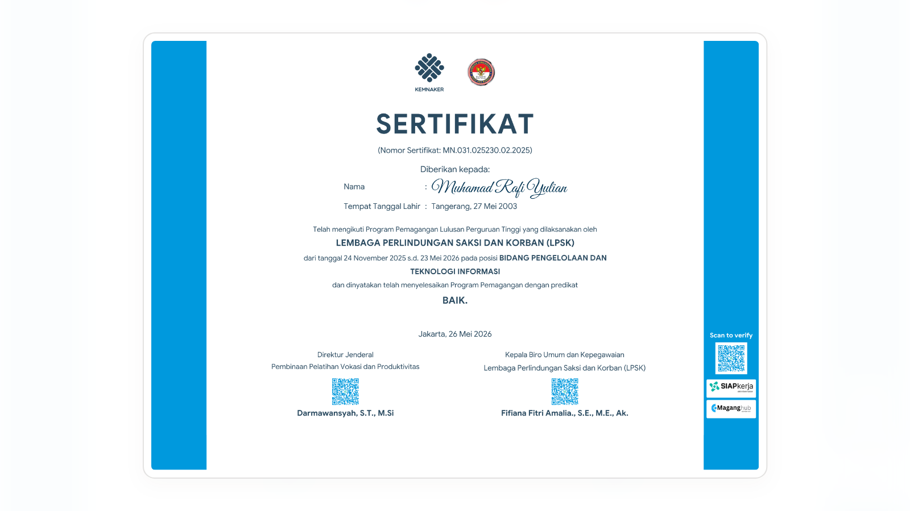
National Internship Certificate
Completed an information technology internship at LPSK, supporting reporting-system work and internal IT operations.
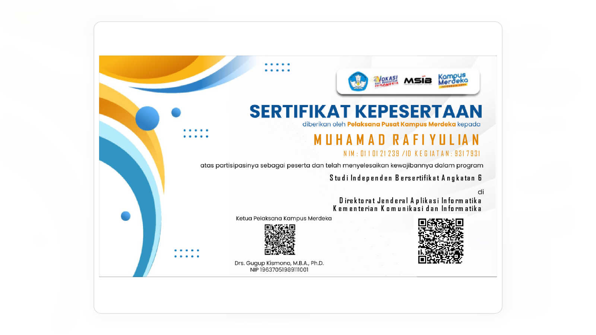
MSIB 6 Participation Certificate
Recognizes participation in a digital startup program covering product validation, MVP thinking, growth, and pitching.
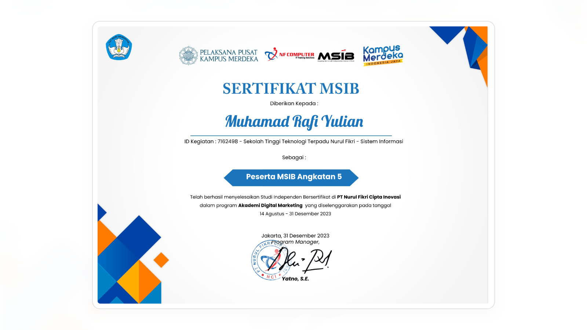
Digital Marketing Academy
Completed structured digital marketing learning focused on SEO, CRM, campaign planning, and e-commerce readiness.
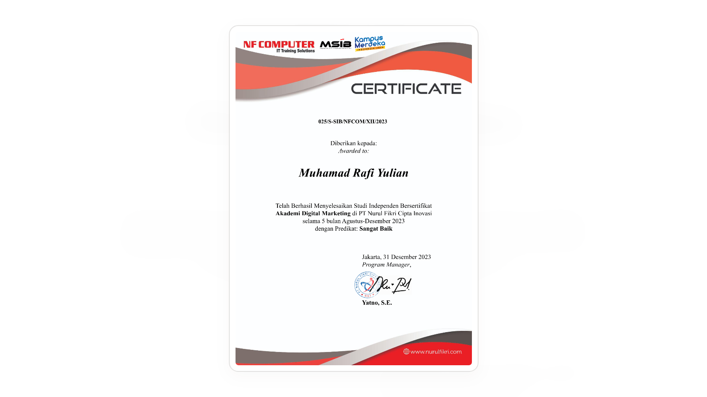
Digital Marketing Graduation
Completion proof for the MSIB academy project, connecting audience research, content strategy, and campaign execution.
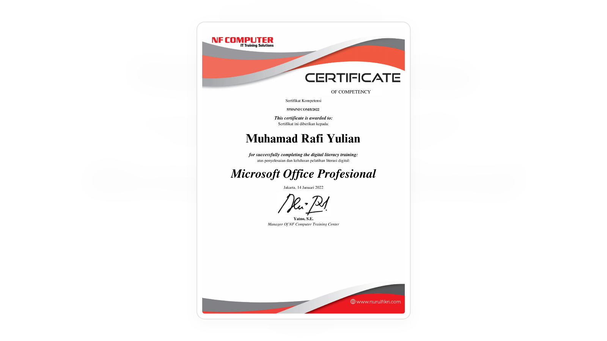
Microsoft Office Professional
Training in document, spreadsheet, and presentation workflows used for reports, analysis, and professional administration.
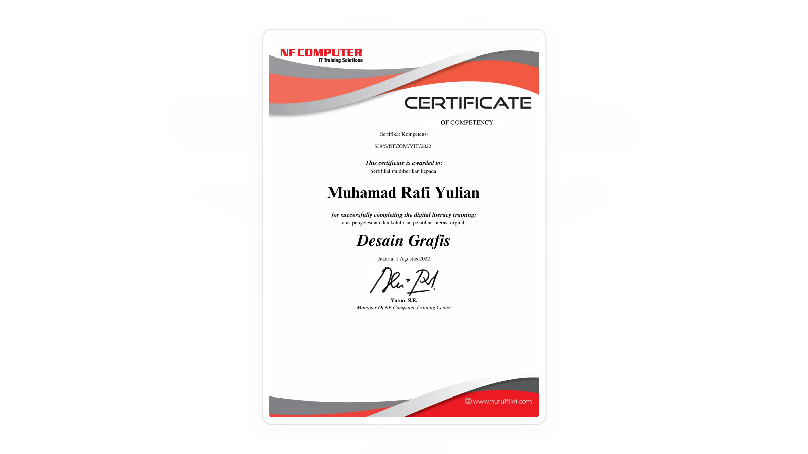
Graphic Design
Creative design practice for marketing visuals, social media assets, and clear brand communication.
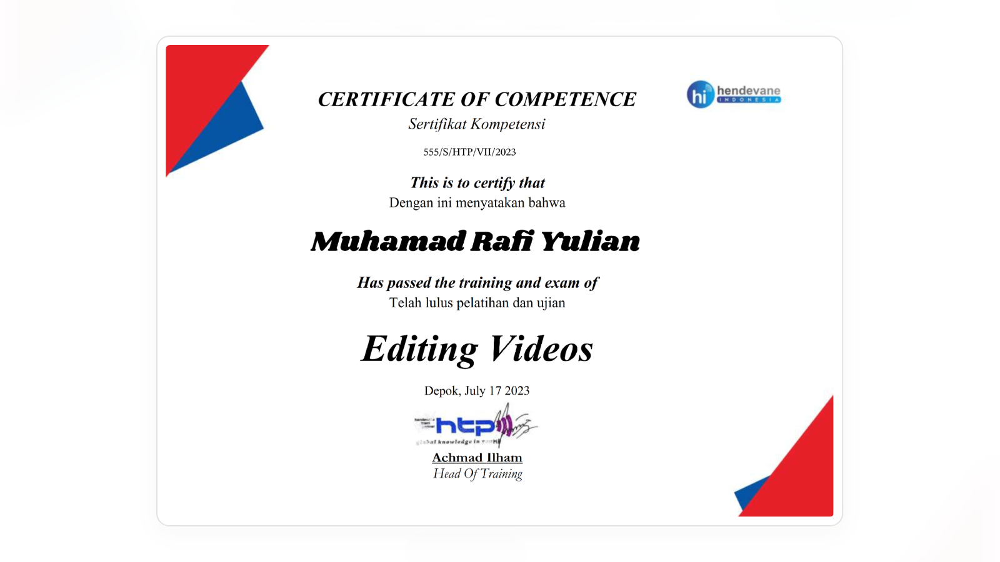
Video Editing
Video editing practice for trimming, sequencing, audio adjustment, and simple content storytelling.
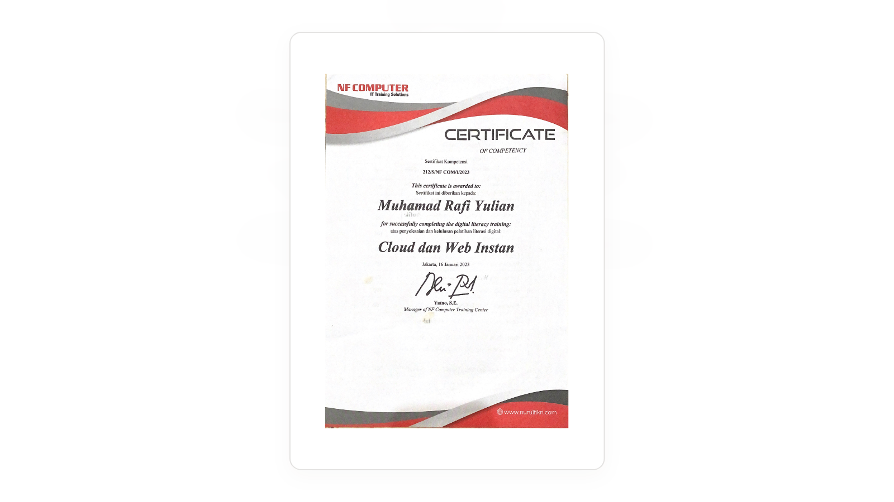
Cloud and Web Instant
Learning certificate for cloud literacy, WordPress publishing, and practical web setup fundamentals.
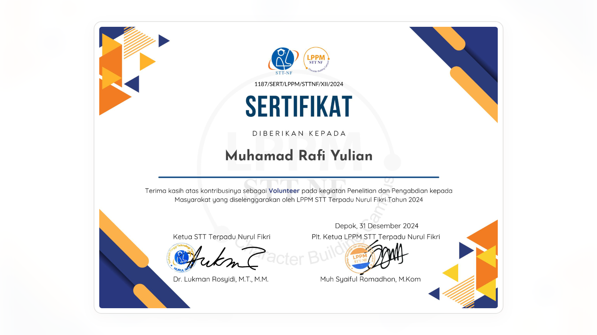
LPPM Volunteer 2024
Supported webinar and seminar operations, helping technical coordination and event documentation.
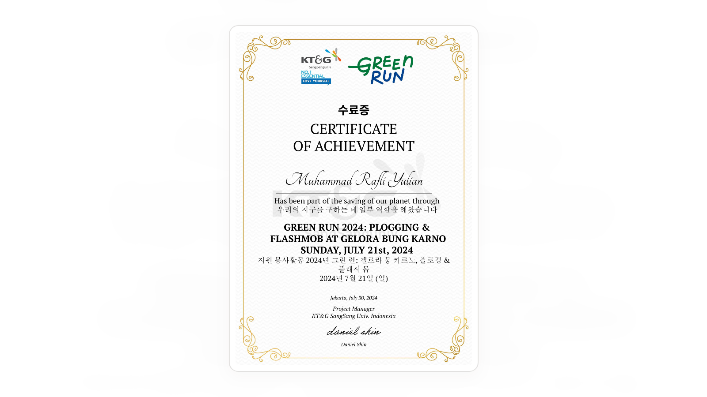
Green Run Volunteer
Community volunteer certificate for supporting an outdoor activity focused on coordination and participant assistance.
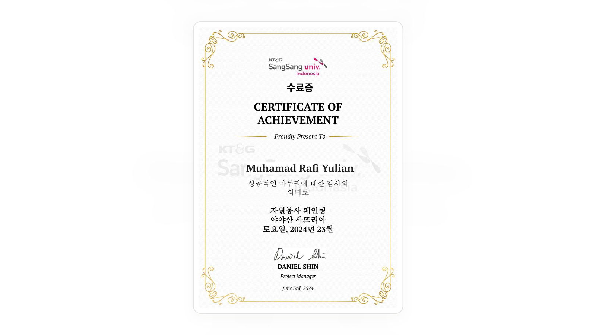
Cooling Paint Program
Volunteer certificate for helping a school painting activity and supporting collaborative field execution.
 Senada
Senada
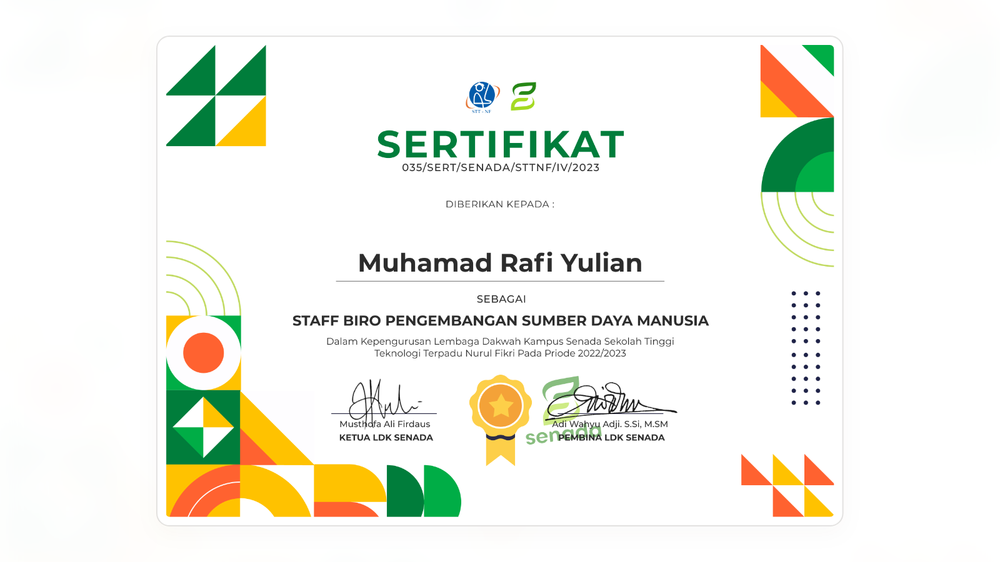
Senada PSDM Certificate
Recognizes organizational contribution in people development, member coordination, and internal program support.
Contact
Let’s Connect
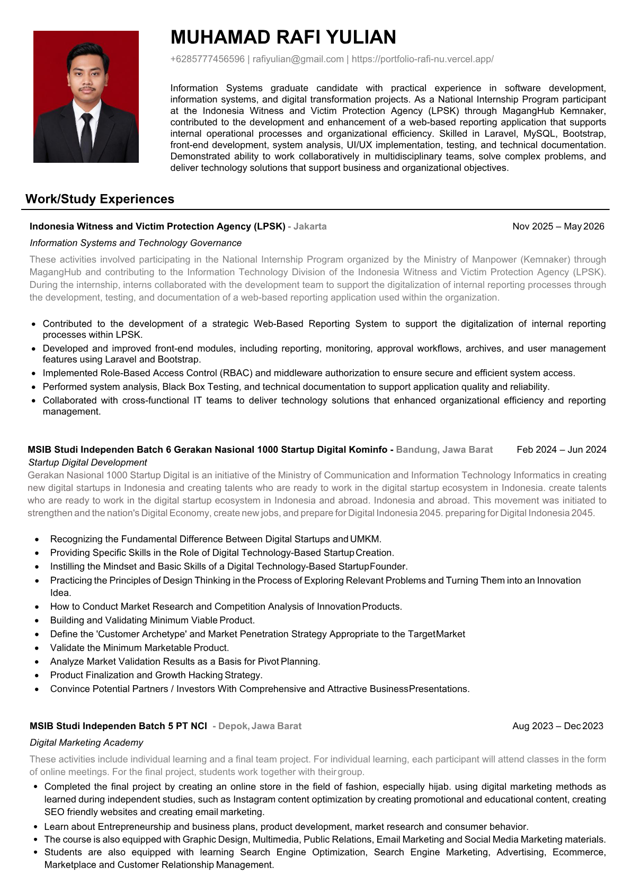
PDF Preview
Curriculum Vitae
A focused CV for recruiter screening, role matching, and quick background review.
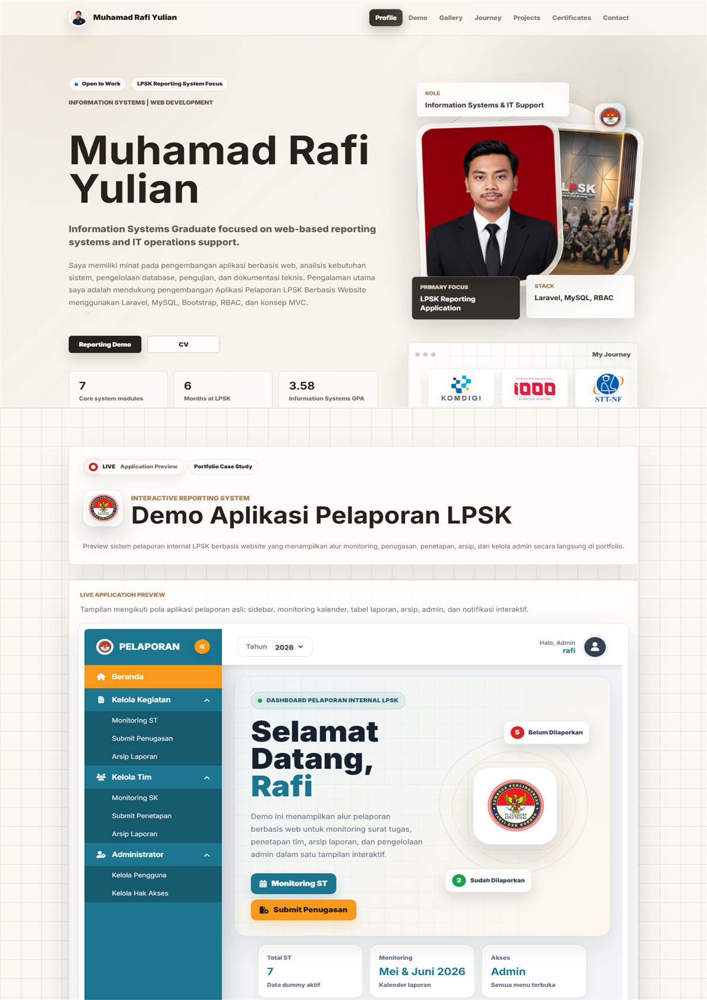
PDF Preview
Full Portfolio
A complete PDF overview of projects, experience, documentation, and supporting materials.
Email
rafiyulian@gmail.com
Best for formal recruitment, portfolio requests, and project discussion.
WhatsApp / Phone
+62 857 7745 6596
Quick response for availability
and scheduled calls.
LinkedIn
muhamad-rafi-yulian
Professional profile, education, experience, and career updates.
Google Maps
Kabupaten Bogor, West Java
Current location area for onsite or hybrid coordination.